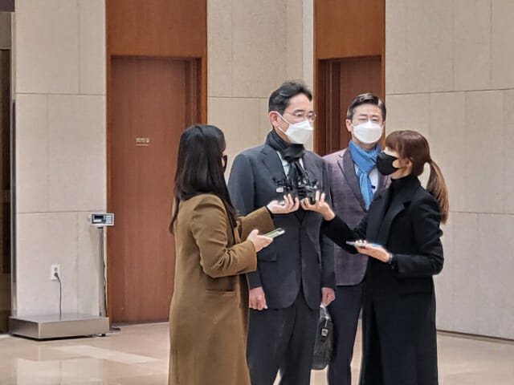

중동 갔다온 이재용 "각국 미래 준비 상황 듣고 왔다"
UAE 출장 후 3일만에 입국...아부다비서 글로벌 전문가 회의 참석
이재용 삼성전자 부회장이 약 3일간의 아랍에미리트(UAE) 출장을 마치고 9일 오후 2시 반 서울김포비즈니스항공센터를 통해 한국에 입국했다.
이재용 삼성전자 부회장이 아랍에미리트(UAE) 출장을 마치고 9일 오후 서울김포비즈니스항공센터를 통해 한국에 입국했다. (사진=지디넷코리아)
취재진의 이번 출장 행선지와 일정에 대한 질문에 이 부회장은 "아부다비에서 조그만 회의가 있었다"며 "전세계에서 각계 방면에서 전문가들이 오셔서 전세계 상황이 어떻게 돌아가고 있는지, 각 나라 산업들에서 미래를 어떻게 준비하고 있는지 들어볼 수 있는 좋은 기회였다"고 답했다.
이어 이번 인사 개편과 다음 행보, 대형 투자 계획 등에 대한 질문 등에는 답을 하지 않은채 "코로나 검사를 받으러 가야한다"는 답변을 하고 공항을 떠났다.
이 부회장은 지난 6일 서울중앙지법에서 열린 삼성물산-제일모직 부당합병 및 삼성바이오로직스 회계 부정 혐의 재판이 끝난 직후, 저녁 비행기를 통해 아랍에미리트로 출국했다.
재계에서는 이 부회장이 중동 국가 출장을 통해 5G 통신과 IT 분야 신사업과 관련해 UAE 기업 등과 협력 방안을 논의한 것으로 예상하고 있다. 이 부회장은 2019년 6월 삼성 사장단 회의에서 "중동지역 국가의 미래산업 분야에서 삼성이 잘 해낼 수 있는 부분을 찾아보고 협력강화 방안을 마련해 발 빠르게 대응해야 한다"며 "기회를 현실화하기 위해서는 기존의 틀을 깨야한다"고 강조한 바 있다.
한편, 최근 코로나19의 새 변이 바이러스인 오미크론 확산으로 해외 입국자는 10일간 자가격리를 해야 한다. 하지만 이 부회장은 '임원급 등 기업의 필수 인력'에 해당해 자가격리를 면제받을 수 있다. 이 부회장의 이번 해외 출장도 '기업인 패스트트랙'을 정부 기관에 제출하면서 알려졌다.
이나리 기자(narilee@zdnet.co.kr)
Copyright ⓒ ZDNet Korea. All rights reserved. 무단 전재 및 재배포 금지.
※ 이 기사는 언론사에서 IT 섹션으로 분류했습니다.